# коллекция библиотек tidyverse 📦
library(tidyverse)
# библиотека с данными
library(palmerpenguins)Визуализация данных в ggplot2
В настоящий момент трудно представить себе, что кто-то начинает изучать язык программирования R и не слышал о библиотеке ggplot2. Это очень мощный инструмент, который позволяет делать графики с помощью наложения слоев, работать со статистическими моделями, точно настраивать последовательность появления элементов на графиках и многое другое. Краткие основы ggplot2 можно посмотреть на странице справочного руководства.
По основам работы с библиотекой выпущено немало книг, из которых можно отметить
Лучший способ научиться основам визуального представления данных в ggplot2 – это практика, но когда хочется посмотреть, как делают что-то эксперты, увидеть структурированный материал, нужно коротко и по существу, то мы прибегаем к курсам. Курсов и обучающих материалов по ggplot2 очень много, выделим лишь несколько интересных:
Claus O. Wilke: курс Data Visualization in R на основе его книги Fundamentals of Data Visualization
Dr. Cédric Scherer: курс Engaging and Beautiful Data Visualizations with ggplot2.
Dr. Andrew Heiss: курс Data Visualization with R.
Дополнительные исчерпывающие ресурсы по ggplot2 включают в себя: ggplot2 extensions, Awesome ggplot2, awesome-r-dataviz и ggplot tricks.
Хорошо отражены элементы графиков в ggplot2 на рисунке:

ggplot2 (источник)
Не следует забывать, что вид графика напрямую зависит от типов данных (численные, категорные и т.д.), которые следует отразить на графике и то, что исходные данные должны быть в длинном формате. Для выбора вида графика существуют памятки, которые собраны на сайте Data Visualization Reference Guides. Пример постера по выбору графика показан ниже.

Несомненно, одним из самых впечатляющих вкладов в популяризацию ggplot2 являются визуализации социальных проектов, например, #TidyTuesday.
Далее будут показаны некоторые (возможно) не совсем очевидные приемы и советы по работе с ggplot2 и расширениями, которые подсмотрены у опытных пользователей и которые можно использовать в повседневной работе. Данная страница не является полноценным руководством по ggplot2 и не заменяет книги и справочные материалы.
Темы ggplot2 для научных публикаций
Для визуализации данных в ggplot2 существует большое количество различных тем. Чтобы не искать среди множества, выделим некоторые, хорошо подходящие для научных публикаций. Сначала создадим базовый график, отметив некоторые особенности в коде.
Пусть наш график отражает размеры клюва пингвинов по данным из библиотекиpalmerpenguins, а внутренняя переменная отвечает за массу тела.
gg_base <-
penguins |>
na.omit() |>
ggplot(aes(x = bill_length_mm,
y = bill_depth_mm,
fill = species,
size = body_mass_g)) +
1 geom_point(pch = 21,
color = "white",
alpha = 0.7) +
scale_x_continuous(name = "Длина клюва",
2 labels = function(x) str_c(x, " мм")) +
scale_y_continuous(name = "Высота клюва",
labels = function(x) str_c(x, " мм"))
gg_base- 1
-
здесь
pch = 21соответствует графическому параметру символа, который будет использоваться при построении точек; - 2
-
команда
scale_*_continuous(labels = function(x) str_c(x, " мм"))добавляет определенный текст (в нашем случае это единицы измерения: мм) к каждому числу на осях.
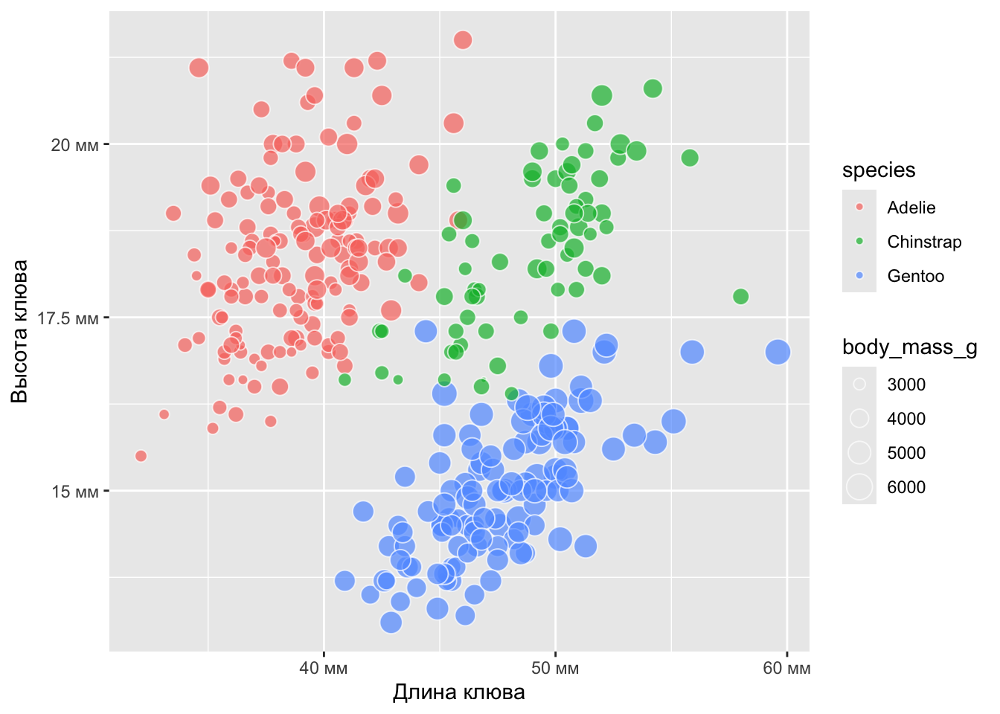
ggplot2-график
Настроим график.
gg_base +
1 theme_grey(base_size = 13) +
scale_fill_manual(
values = c(Adelie = "#0072B2",
Chinstrap = "#D55E00",
Gentoo = "#018571"),
breaks = c("Adelie", "Chinstrap", "Gentoo"),
labels = c("Adelie", "Chinstrap", "Gentoo"),
name = NULL,
guide = guide_legend(
direction = "horizontal",
2 override.aes = list(size = 4,
alpha = 1)
)
) +
3 guides(size = "none") +
theme(
legend.position = "top",
legend.justification = "right",
4 legend.box.spacing = unit(0.1, "cm"),
5 plot.margin = ggplot2::margin(t = 0.01,
r = 0.01,
b = 0.01,
l = 0.01, "cm")
)- 1
-
базовый шрифт можно увеличить командой
theme_*(base_size = 13); - 2
-
размер и прозрачность точек на графике по умолчанию соответствует аналогичным элементам в легенде, что не всегда хорошо для легенды, поскольку в этом случае она может быть плохо видна, исправить положение можно, например, командой:
guides(color = guide_legend(override.aes = list(size = 4, alpha = 1))), переписав значения для элементов легенды; - 3
- убирает из легенды элемент, соответствующий размеру точек;
- 4
- расстояние между легендой и графиком;
- 5
- иногда важно уменьшить поля, сделав полезную площадь графика больше, указав отступы с каждой стороны графика1.
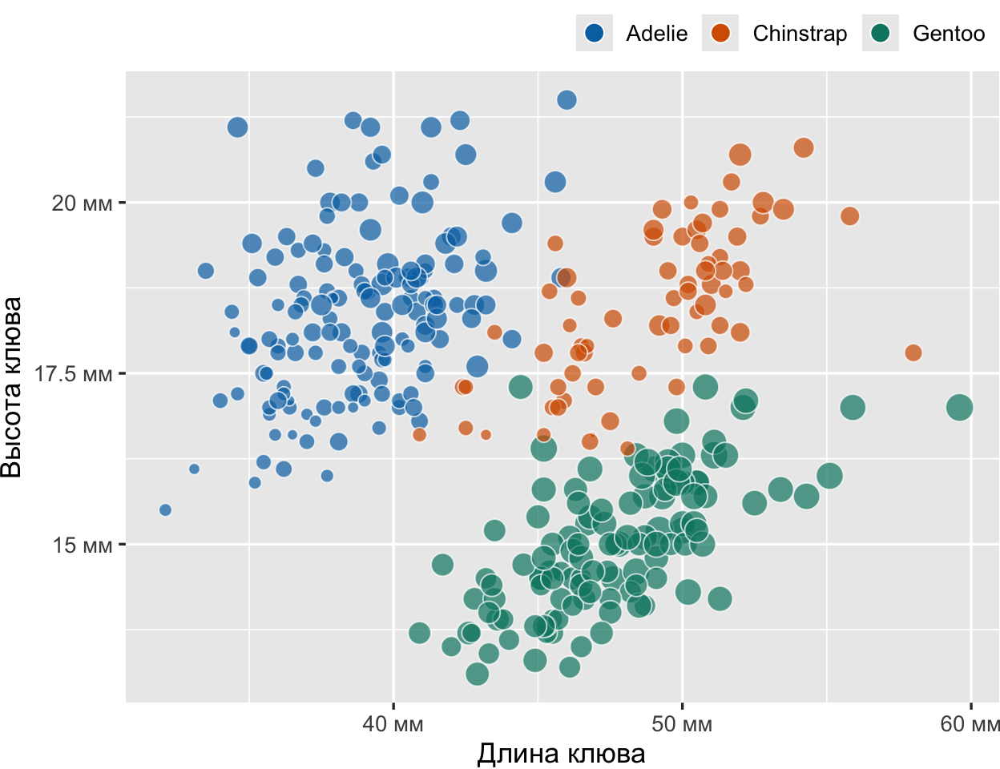
ggplot2-график
Непосредственно в самой библиотеке ggplot2 существует ряд тем, которые хорошо подходят для графиков научных публикаций, например, theme_bw(), theme_classic(), theme_light() или theme_minimal(), достаточно в ggplot2 коде сделать изменение, написав вместо theme_grey() соответствующее название темы.
Темы hrbrthemes
Рассмотрим сторонние темы ggplot2. Библиотека hrbrthemes, которую создал Bob Rudis позволяет создавать в R визуально привлекательные графики публикационного качества, его продуманные темы и расширенные настройки типографики упрощают создание визуализаций. Актуальную версию библиотеки можно установить командой
remotes::install_github("hrbrmstr/hrbrthemes")Для применения темы нужно указать тему theme_ipsum() в коде.
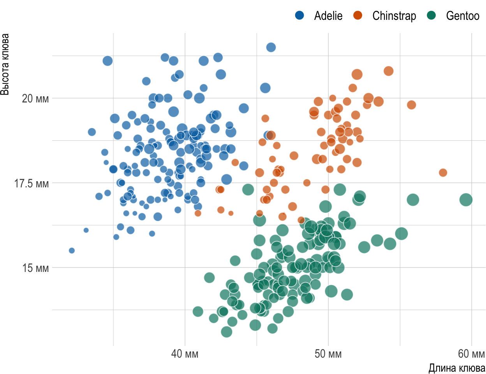
hrbrthemes
Библиотека содержит множество различных настроек, включая темную тему, вариации шрифтов и отрисовку осей.
Темы ggpubr
Библиотека ggpubr(автор Alboukadel Kassambara) помогает исследователям легко создавать графики, готовые к публикации, упрощает изменение графических параметров, позволяет добавлять p-значения и уровни значимости к гистограммам, линейным графикам и т. д. Установить библиотеку можно командами:
install.packages("ggpubr")devtools::install_github("kassambara/ggpubr")Следующий график соответствует theme_pubr().
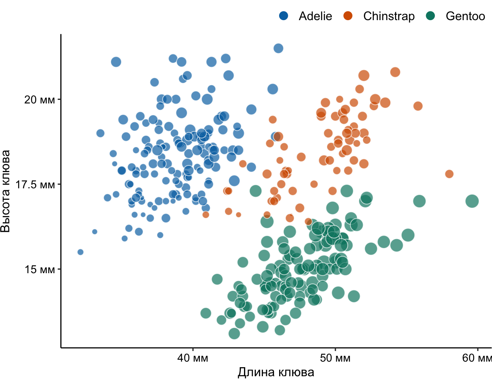
ggpubr
Темы silgelib
Julia Silge создала несколько тем, которые (после установки соответствующих шрифтов) можно использовать в графиках. Загрузить библиотеку с темами можно с GitHub:
devtools::install_github("juliasilge/silgelib")Ниже показан пример темы: silgelib::theme_roboto().
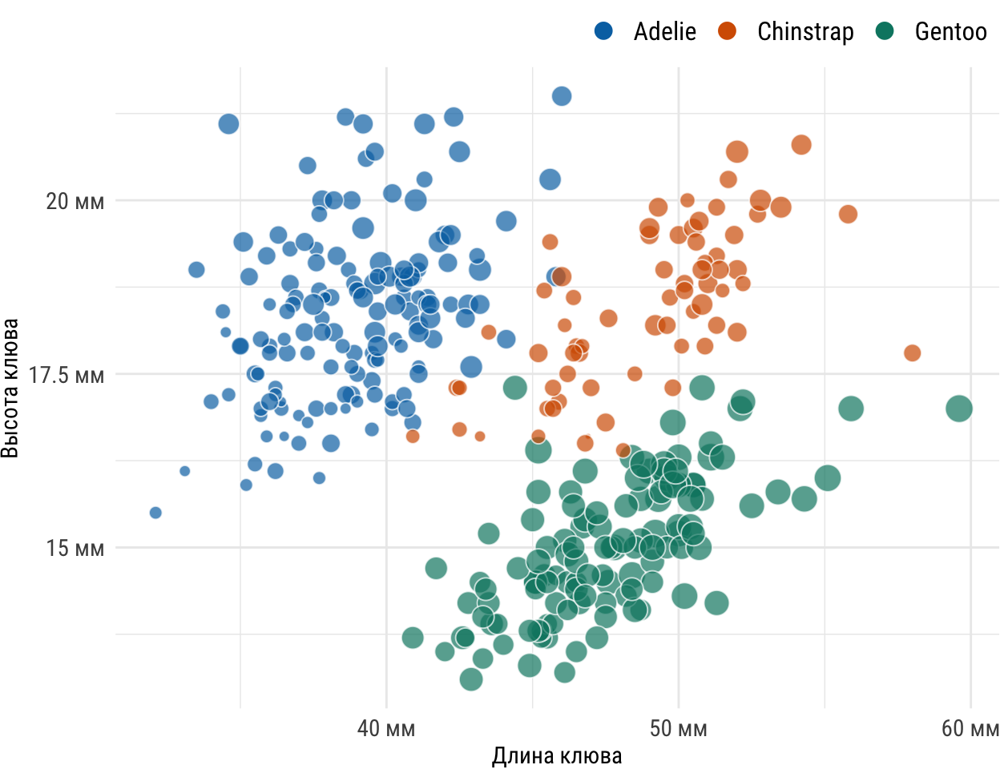
silgelib
- Если рассмотренных тем недостаточно, то множество дополнительных тем можно найти на странице библиотеки
ggthemes, например,theme_tufte()на основе стиля, автор которого Edward Tufty илиtheme_fivethirtyeight(). - Библиотека
ggridgesпредназначена в первую очередь для построения хребтовых диаграмм (риджлайнов), однако у нее также доступна тема дляggplot2по командеggridges::theme_ridges(). - Также стоит упомянуть темы
bbplotиз BBC Visual and Data Journalism cookbook for R graphics и ftplottools::ft_theme().
Упрощенная легенда графика
Иногда удобно воспользоваться библиотекой ggdirectlabel, которая служит для упрощения нанесения условных обозначений в ggplot2, перенося их внутрь диаграммы вместо отдельной легенды. На рисунке показан пример замены легенды на упрощенный вариант. В нашем случае использовалась команда, которую необходимо добавить в код для ggplot2-графика:
+ geom_richlegend(aes(label = species, color = species))
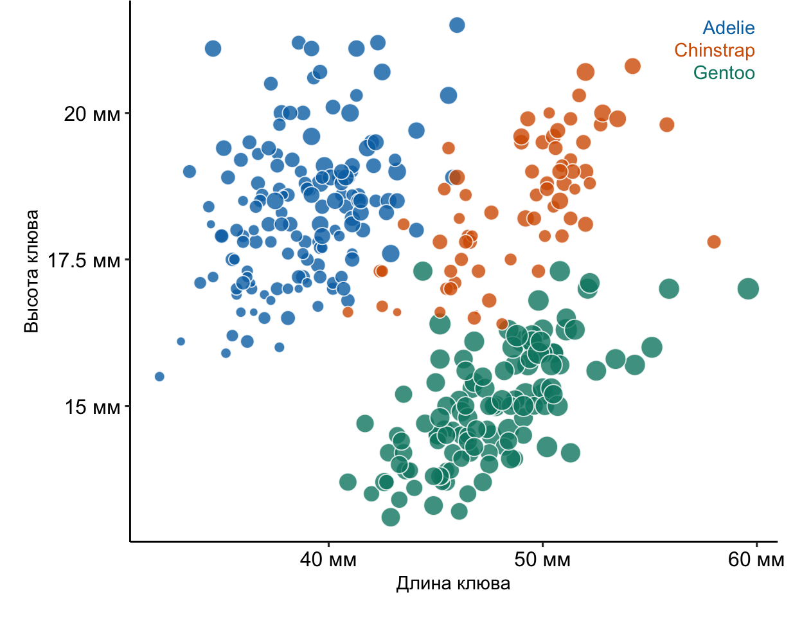
ggdirectlabel
Как выбрать тему?
Есть достаточно простой и быстрый способ посмотреть всевозможные темы для исходного графика (например, мы ничего не сказали выше про темные темы), сделав в некотором роде примерку. Для этого можно использовать библиотеку ggautothemes, которая покажет как выглядят свыше 30 различных тем в применении к исходному графику.
library(ggautothemes)Пусть gg_base – исходный график, тогда можно сформировать набор графиков с различными темами по исходному следующим образом:
# формирование графиков с темами по исходному
autoallthemes(gg_base)Установка темы
Использование theme_set() позволяет избежать репликации написания кода для установки темы, полностью переписывая текущую тему. Можно одним приемом задать тему для всех графиков в документе, например:
theme_set(
# стартовая тема
ggplot2::theme_classic() +
# элементы устанавливаемой темы
theme(
legend.text = element_text(size = 12),
axis.title.x = element_text(size = 11),
axis.title.y = element_text(size = 11),
legend.position = "top",
legend.justification = "right",
legend.box.spacing = unit(0.1, "cm"),
plot.margin = ggplot2::margin(t = 0.01,
r = 0.01,
b = 0.01,
l = 0.01, "cm")
)Для любой темы можно получить элемент темы, используя [[. Затем можно использовать оператор %+replace% для замены определенных элементов темы на необходимые. Например, пусть мы хотим применить к исходному графику gg_base тему theme_ipsum() из библиотеки hrbrthemes везде, кроме текста значений по осям:
gg_base +
hrbrthemes::theme_ipsum(grid = "XY",
base_size = 14) %+replace%
theme(axis.title = ggthemes::theme_gdocs()[["axis.title"]],
axis.title.x = ggthemes::theme_gdocs()[["axis.title.x"]],
axis.title.y = ggthemes::theme_gdocs()[["axis.title.y"]],
legend.position = "none") +
NULL
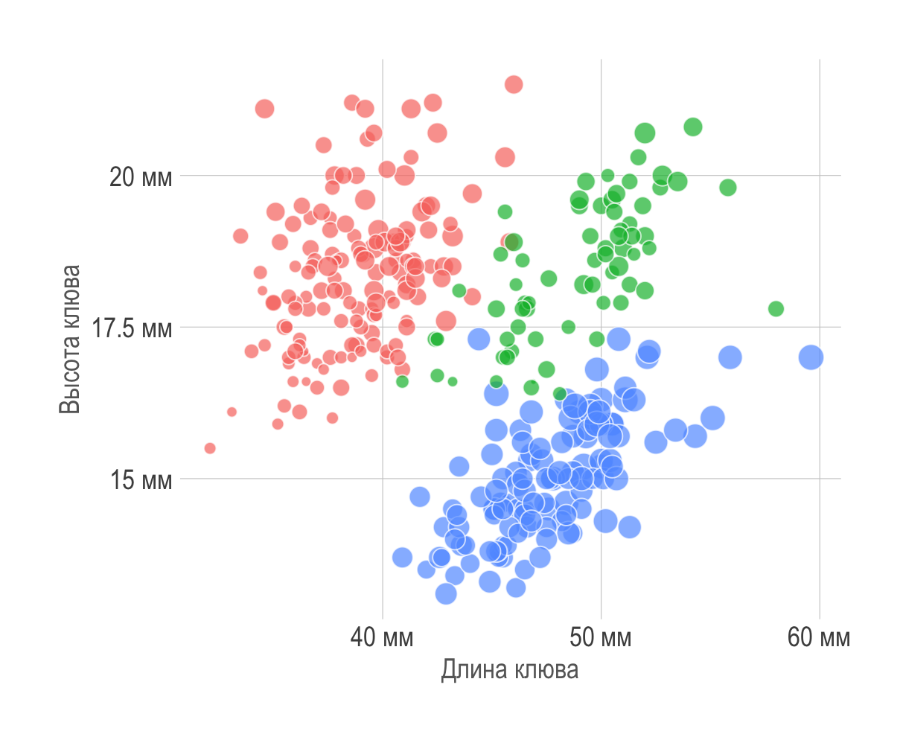
Отметим, что код выше заканчивается + NULL, это удобно в случае отладки графика, когда будут еще добавляться строки в код.
Комбинирование графиков
Для того, чтобы комбинировать графики в ggplot2 можно воспользоваться библиотекой patchwork. Здесь алгебра комбинирования довольно простая: например, если даны графики p1, p2, то p1 | p2 разместит графики рядом друг с другом, p1 / p2 разместит их друг над другом и т.д.
Один из интересных приемов, чтобы собрать графики предложил June Choe.
Предложенный подход основан на использовании I() (AsIs variables) и работает только с ggplot2 версии 3.5.0 и выше.
library(patchwork)
x <- 1:100
y <- x^2
df_combine <- data.frame(x, y)
p <- ggplot(df_combine, aes(x, y)) +
geom_line() +
theme_grey(base_size = 14)Код: функция комбинирования графиков
annotate_broken_axis <- function(pos, size = 0.03){
mid <- switch(
pos,
"bl" = list(x = 0, y = 0),
"br" = list(x = 1, y = 0),
"tl" = list(x = 0, y = 1),
"tr" = list(x = 1, y = 1)
)
slash <- annotate(
"segment",
x = I(mid$x - size), xend = I(mid$x + size),
y = I(-size), yend = I(size)
)
list(slash, coord_cartesian(clip = "off"))
}scale_mark <-
scale_y_continuous(labels = function(x) format(x, big.mark = " ",
scientific = FALSE))
p1 <- p +
scale_x_continuous(limits = c(1, 70)) +
annotate_broken_axis(pos = "br") +
scale_mark
p2 <- p +
scale_x_continuous(limits = c(80, 100)) +
annotate_broken_axis(pos = "bl") +
scale_mark
p1 + p2 +
plot_layout(axis = "collect") &
theme(axis.line.x = element_line())
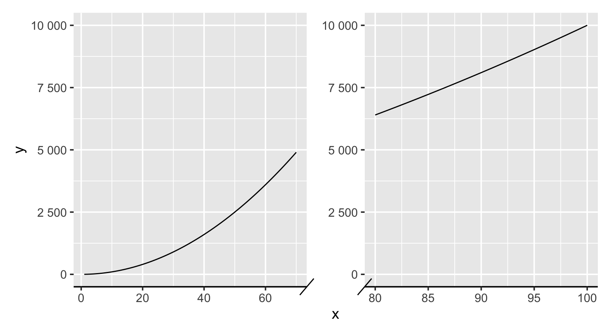
В коде выше функция внутри scale_y_continuous(...) позволяет сделать пробелы-разделители для разрядов тысяч.
Надграфики
Одна из возможностей добавления дополнительной графической информации к графику – построение надграфиков аналогично панелированию, что можно сделать, например, в библиотеке ggside.
Код: базовый график для надстройки
gg_side_plot <-
penguins |>
na.omit() |>
ggplot(aes(x = bill_length_mm,
y = bill_depth_mm,
fill = species)) +
geom_point(pch = 21,
size = 4,
color = "white",
alpha = 0.8) +
theme_grey(base_size = 13) +
scale_fill_manual(
values = c("#0072B2",
"#D55E00",
"#018571")
) +
scale_x_continuous(name = "Длина клюва",
labels = function(x) str_c(x, " мм")) +
scale_y_continuous(name = "Высота клюва",
labels = function(x) str_c(x, " мм")) +
theme(
legend.position = "none",
plot.margin = ggplot2::margin(t = 0.01,
r = 0.01,
b = 0.01,
l = 0.01, "cm")
)Все геометрии, поддерживаемые ggside имеют шаблон geom_xside* или geom_yside* и добавляются в качестве дополнительного слоя в ggplot2-график как обычно.
library(ggside)
gg_side_plot +
geom_xsideboxplot(aes(y = species),
orientation = "y",
alpha = 0.8) +
geom_ysidedensity(aes(x = after_stat(density)),
position = "identity",
alpha = 0.8) +
scale_ysidex_continuous(guide = guide_axis(angle = 90),
minor_breaks = NULL) +
theme(ggside.panel.scale = 0.3)
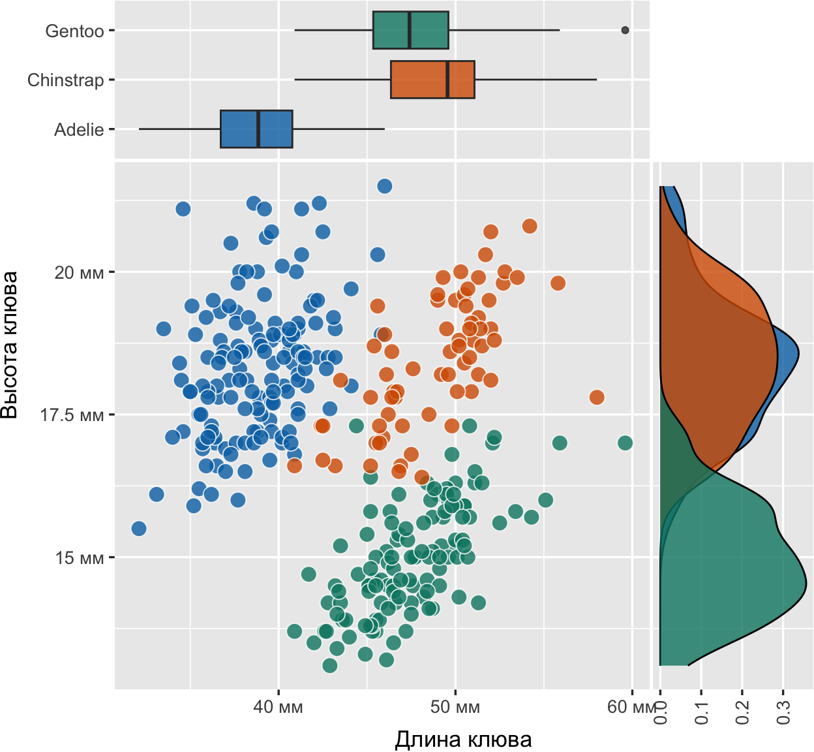
Функциональные возможности
Функциональное использование эстетики
Пусть нам требуется сделать цвет/заполнение (color/fill) светлее/темнее относительно друг друга. Для сопоставления данных, преобразованных в статистику, необходимо использовать функцию after_stat(), а для косвенного использования aes() – оператор «бэнг-бэнг-бэнг» !!! как в статье ggplot tricks, которую написал Teun van den Brand.
Пусть прозрачность заполнения точек должна быть меньше и составляет 0.3 от основной яркости границы.
my_fill_light <- aes(fill = after_scale(alpha(colour, 0.3)))Код: базовый график
gg_base_aes <- penguins |>
na.omit() |>
ggplot(aes(x = bill_length_mm,
y = bill_depth_mm,
size = body_mass_g)) +
scale_x_continuous(name = "Длина клюва",
labels = function(x) str_c(x, " мм")) +
scale_y_continuous(name = "Высота клюва",
labels = function(x) str_c(x, " мм")) +
theme_classic(base_size = 14) +
scale_color_manual(
values = c(male = "#0072B2",
female = "#D55E00"),
breaks = c("male", "female"),
labels = c("муж", "жен"),
name = NULL,
guide = guide_legend(
direction = "horizontal",
override.aes = list(size = 4,
alpha = 1)
)
) +
guides(size = "none") +
theme(
axis.line = element_line(),
panel.background = element_rect(fill = "white"),
panel.grid.major = element_line("grey90",
linewidth = 0.3),
legend.key = element_rect(fill = NA),
legend.position = "top",
legend.justification = "right",
legend.box.spacing = unit(0.1, "cm"),
plot.margin = ggplot2::margin(t = 0.5,
r = 0.5,
b = 0.5,
l = 0.5, "cm")
)library(rlang)
gg_base_aes +
geom_point(aes(colour = factor(sex),
!!!my_fill_light), shape = 21)
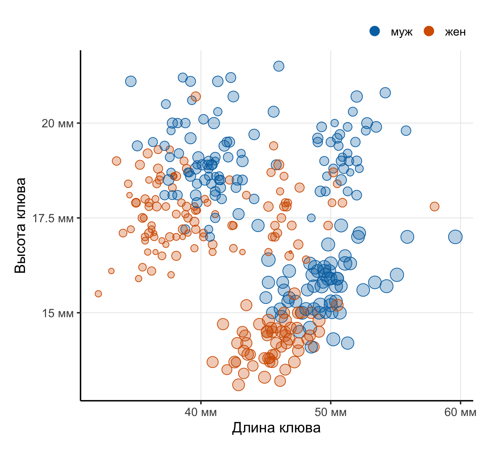
Автоматизация
Если требуется сделать несколько однотипных графиков, то один из способов автоматизции рутинных действий – использование функциональных возможностей ggplot2. Например, функция может использовать {{ }} и выглядеть как ниже, если известно, что col – имя столбца:
function(df, col) {
ggplot(df) +
geom_*(aes(x = {{ col }}))
}Приведем пример функции, которая формирует столбиковую диаграмму для отображения связи между числовой и категориальной переменной. Заполнение будет происходить с помощью градиента, данная возможность появилась в ggplot2 версии 3.5.0 и выше.
# формирование градиента
library(grid)
turbo_colors <- scales::viridis_pal(option = "inferno")(10)
grad_colors <- linearGradient(turbo_colors,
group = TRUE)Код: пример функции для однотипных графиков
barplot_fun <- function(data, x) {
ggplot(data,
aes(x = {{ x }})) +
geom_bar(fill = grad_colors, color = "white") +
scale_y_continuous(name = "Количество",
labels = function(x) format(x, big.mark = " ",
scientific = FALSE)) +
hrbrthemes::theme_ipsum(grid = "Y") +
theme(
axis.line = element_line(),
axis.title.x = element_text(size = 12),
axis.title.y = element_text(size = 12),
panel.grid.major = element_line("grey90",
linewidth = 0.3),
plot.margin = ggplot2::margin(t = 0.1,
r = 0.1,
b = 0.1,
l = 0.1, "cm")
)
}library(patchwork)
barplot1 <- barplot_fun(diamonds, cut)
barplot2 <- barplot_fun(mpg, class)
barplot1 / barplot2
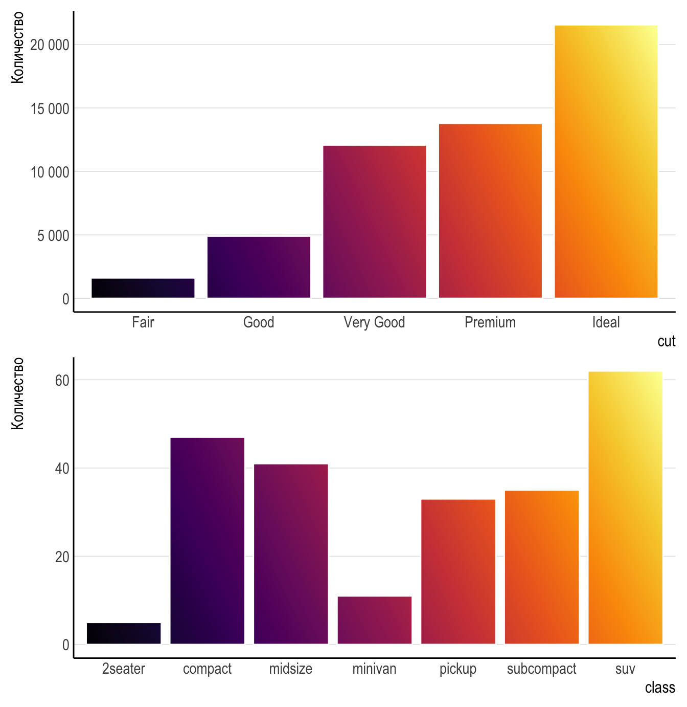
Аналогичный результат можно получить, если использовать оператор %+% заполнения или замены набора данных.
Код: пример базовой части графика
bar_chart <- ggplot() +
geom_bar(fill = grad_colors, color = "white") +
scale_y_continuous(name = "Количество",
labels = function(x) format(x, big.mark = " ",
scientific = FALSE)) +
hrbrthemes::theme_ipsum(grid = "Y") +
theme(
axis.line = element_line(),
axis.title.x = element_text(size = 12),
axis.title.y = element_text(size = 12),
panel.grid.major = element_line("grey90",
linewidth = 0.3),
plot.margin = ggplot2::margin(t = 0.1,
r = 0.1,
b = 0.1,
l = 0.1, "cm")
)library(patchwork)
barchart1 <- bar_chart %+% diamonds +
aes(cut)
barchart2 <- bar_chart %+% mpg +
aes(class)
barchart1 / barchart2Итеративные графики
Если необходимо сделать несколько графиков на основе одних и тех же данных, но с различными переменными, можно написать функцию.
Код: функция для итерации графиков
plot_density <- function(data, var, grp = "") {
ggplot(data, aes(x = !!sym(var))) +
geom_density(aes(fill = !!sym(grp)),
position = "identity",
alpha = 0.7) +
scale_x_continuous(labels = function(x) str_c(x, " мм")) +
silgelib::theme_roboto(base_size = 13) +
viridis::scale_fill_viridis(name = NULL,
option = "plasma",
direction = -1,
discrete = TRUE) +
theme(legend.position = "top",
plot.margin = ggplot2::margin(t = 0.1,
r = 0.1,
b = 0.1,
l = 0.1, "cm"))
}Отметим, что в функции plot_density мы воспользовались дискретизацией непрерывной палитры через scale_fill_viridis, поскольку заранее неизвестно количество переменных, которые будут участвовать в графике. В частности, построим два графика для переменных bill_length_mm и bill_depth_mm.
plots <- purrr::map(
c("bill_length_mm", "bill_depth_mm"),
~ plot_density(data = penguins |> na.omit(),
var = .x, grp = "sex")
)patchwork::wrap_plots(plots, nrow = 1)
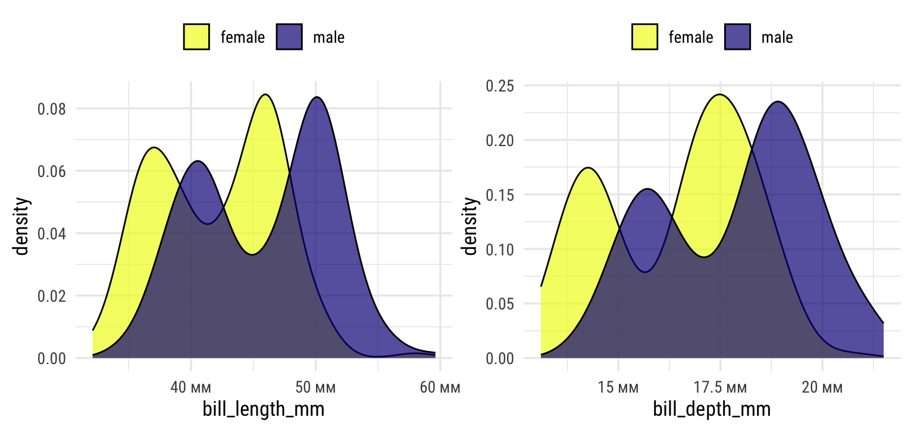
Цвета и палитры
Палитры
Цветовые палитры в визуализации данных должны выявлять различия между количественными данными и обеспечивать максимально удобное восприятие информации.

Одной из наиболее распространенных палитр для графиков в ggplot2 является viridis (см. Introduction to the viridis color maps). Цвета viridis охватывают максимально широкую палитру, чтобы различия были легко заметны, color blind устойчивы, при этом значения, близкие друг к другу, имеют схожие цвета, а значения, находящиеся далеко друг от друга, имеют больше различий.
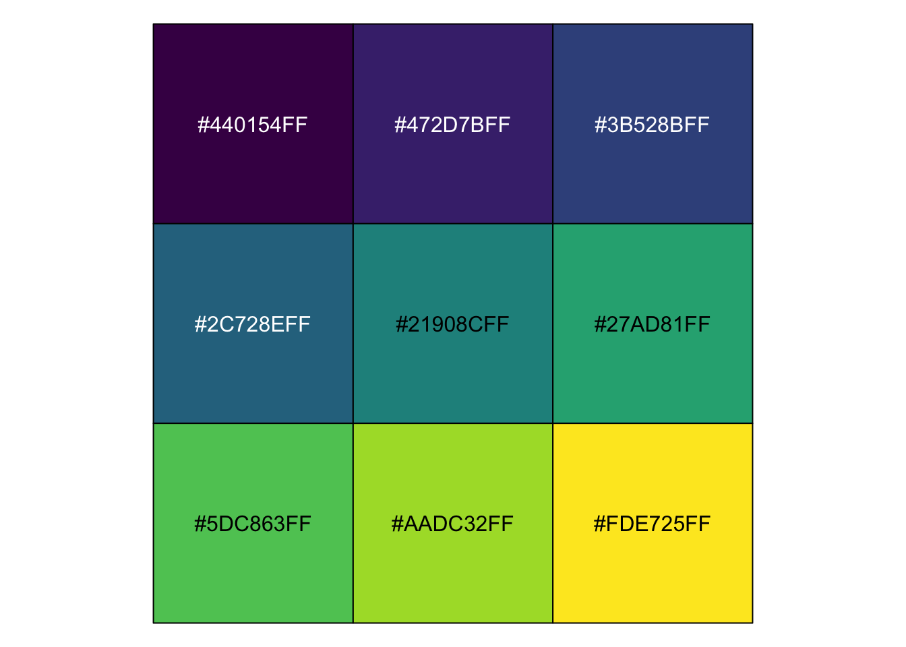
viridis
Основная палитра называется viridis и дополнена еще несколькими цветовыми гаммами: magma, plasma, inferno, cividis, mako, rocket и turbo. Удобно то, что внутри команды scale_color_viridis() или scale_fill_viridis() можно указать параметр direction = 1 или direction = -1 для того, чтобы указать направление последовательности цветов и discrete = TRUE, если необходима дискретная палитра.
Универсальные палитры, которые могут быть полезны при работе в ggplot2, это:
ggsci(Scientific Journal and Sci-Fi Themed Color Palettes for ggplot2)ggokabeito(discrete, colorblind-friendly Okabe-Ito palette)scico(Palettes for R based on the Scientific Colour-Maps)tidyterra(Gradient palettes in tidyterra)
Дополнительные ресурсы для выбора и демонстрации возможностей цветовых палитр:
- colorbrewer2.org
- R Color Palettes 1 + R Color Palettes 2 – палитры на основе библиотеки
paletteer
Больше о цветовых возможностях R версии выше 4.0.0 можно почитать в статье Coloring in R’s Blind Spot.
Выделение цветом
Предположим, что необходимо показать все множество значений и на фоне общего множества выделить вклад каждого подмножества. Удобно сделать это с помощью цвета может помочь библиотека gghighlight.
Код: базовый график
gg_highlight <-
penguins |>
na.omit() |>
ggplot(aes(x = flipper_length_mm,
fill = species)) +
geom_bar() +
silgelib::theme_roboto(base_size = 14) +
ggsci::scale_fill_nejm(alpha = 0.9) +
scale_x_continuous(name = "Размах плавника",
labels = function(x) str_c(x, " мм")) +
labs(y = "количество") +
theme(
axis.line = element_line(),
panel.grid.major = element_line("grey95",
linewidth = 0.3),
plot.margin = ggplot2::margin(t = 0.5,
r = 0.5,
b = 0.5,
l = 0.5, "cm")
)gg_highlight
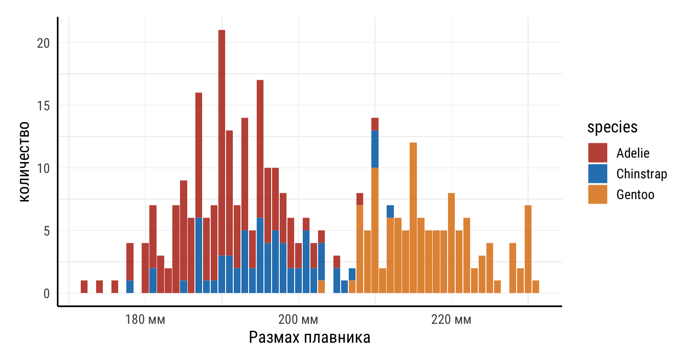
library(gghighlight)
gg_highlight +
gghighlight() +
facet_wrap(~species){kind=link}
gghighlight
Изменение шкалы
В качестве исходных данных выберем North Carolina SIDS data. Пусть цвет соостветствует площади полигонов графств в градусных единицах, а выделенная область – округ Франклин, Северная Каролина, США.
nc <- sf::st_read(system.file("shape/nc.shp", package = "sf"),
quiet = TRUE)Код: исходная карта
gg_map <- ggplot(nc) +
geom_sf(aes(fill = AREA),
color = "black",
linewidth = 0.2) +
labs(fill = "площадь") +
hrbrthemes::theme_ipsum() +
guides(fill = guide_colorbar(title.position = "top",
title.hjust = 0.5,
barwidth = unit(20, "lines"),
barheight = unit(0.7, "lines"))) +
theme(legend.position = "top",
legend.text = element_text(size = 12),
legend.title = element_text(size = 14),
plot.margin = ggplot2::margin(t = 0.01,
r = 0.01,
b = 0.01,
l = 0.01, "cm"))
gg_map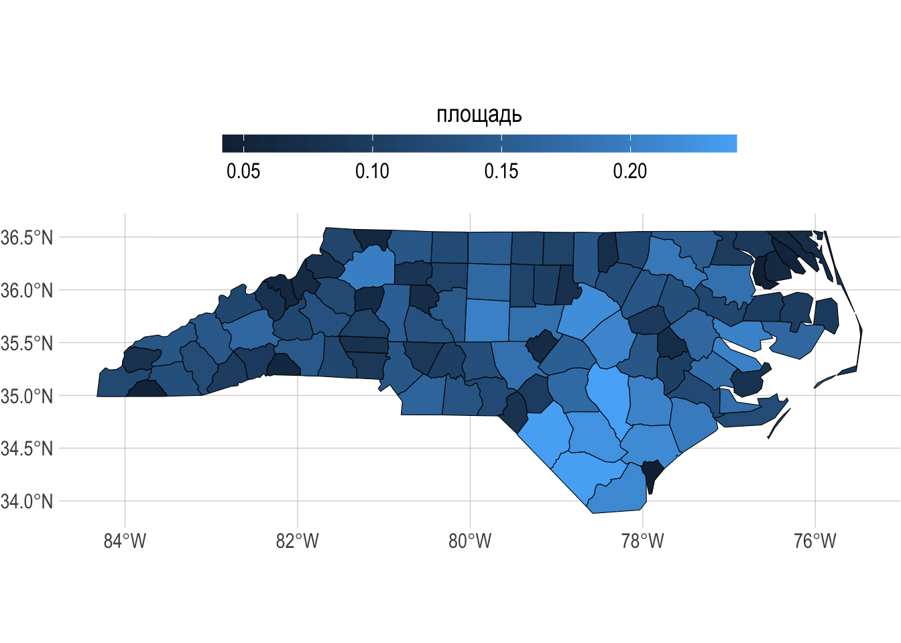
Для карты можно выбрать палитру с помощью библиотеки paletteer из набора. Это можно сделать, добавив в код графка
+ paletteer::scale_fill_paletteer_*("ggthemes::palette_name",
direction = -1)При этом обязательно нужно указать направление цвета direction = 1 или direction = -1. Например, для интервальной шкалы можно выбрать среднюю точку с помощью команды rescaler = ~ rescale_mid(.x, mid = mid_point_value). Пусть цвета соответствуют шкале ggthemes::Classic Orange-Blue, а центр цветовой палитры соответствует значению 0.2.
library(paletteer)
gg_map +
scale_fill_paletteer_c("ggthemes::Classic Orange-Blue",
direction = -1,
rescaler = ~ rescale_mid(.x, mid = 0.20)
)
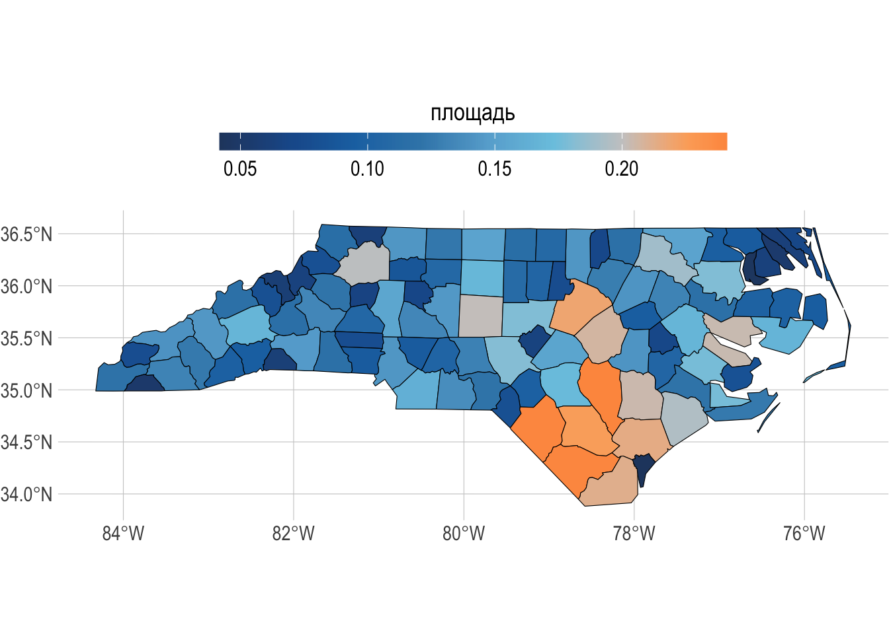
Средние значения для центрирования цвета можно программировать, например, выбирать медиану или центрировать, используя долю, как показано ниже. Для этого выделим среднее значение по показателю, которое равно 0.12.
gg_map +
paletteer::scale_fill_paletteer_c("ggthemes::Classic Orange-Blue",
direction = -1,
limits = ~ c(0, 1) * max(abs(.x))
)
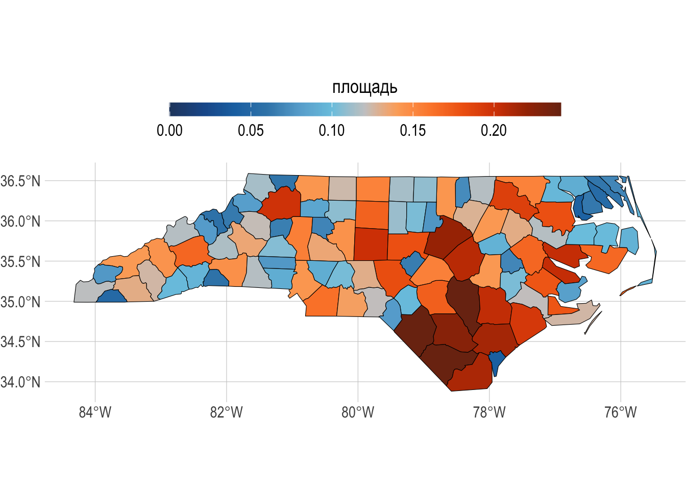
Дополнительные возможности
Аннотирование
Библиотека ggforce предоставляет множество замечательных инструментов для работы с графикой ggplot2. В частности, можно делать аннотации к группам на графике, выделив области и снабдив их сносками.
Код: график для аннотирования
penguins_without_na <- penguins |> na.omit()
# исходный график
gg_penguins <-
penguins_without_na |>
ggplot(aes(x = bill_length_mm,
y = bill_depth_mm,
fill = species,
size = body_mass_g)) +
geom_point(pch = 21,
color = "white",
alpha = 0.7)
# модифицированный график
gg_plot <- gg_penguins +
silgelib::theme_roboto(base_size = 14) +
scale_fill_manual(
values = c(Adelie = "#0072B2",
Chinstrap = "#D55E00",
Gentoo = "#018571"),
name = NULL,
guide = guide_legend(
direction = "horizontal",
override.aes = list(size = 4,
alpha = 1)
)
) +
guides(size = "none") +
theme(
legend.position = "top",
legend.justification = "right",
legend.box.spacing = unit(0.1, "cm"),
legend.text = element_text(size = 13),
plot.margin = ggplot2::margin(t = 0.5,
r = 0.5,
b = 0.5,
l = 0.5, "cm")
) +
labs(x = "Длина клюва (мм)",
y = "Высота клюва (мм)") +
xlim(min(penguins_without_na$bill_length_mm) - 5,
max(penguins_without_na$bill_length_mm) + 5) +
ylim(min(penguins_without_na$bill_depth_mm) - 2,
max(penguins_without_na$bill_depth_mm) + 2)library(ggforce)
gg_plot +
geom_mark_ellipse(aes(label = species),
linewidth = 0.5,
show.legend = FALSE)
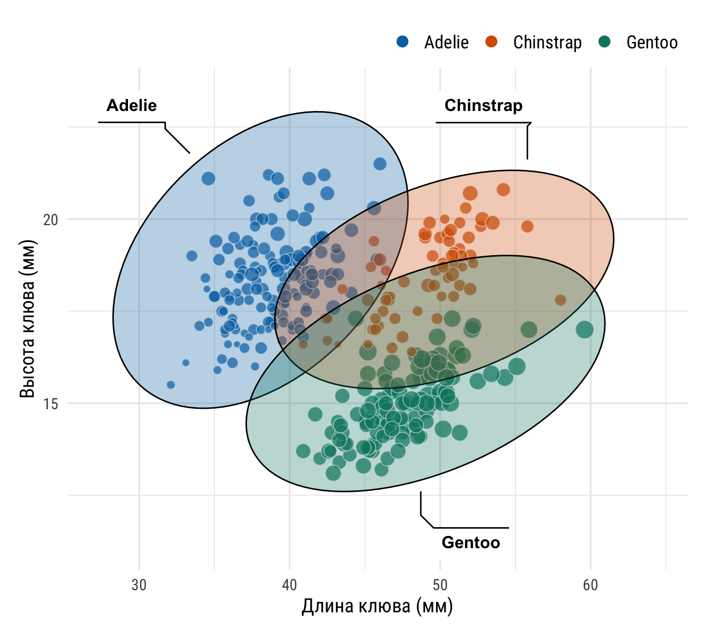
Текст внутри графика
В график ggplot2 можно добавить практически любой markdown-текст для HTML-аннотирования, например, курсив или полужирный текст, а также использовать выделение цветом с применением библиотеки ggtext.
Код: пример дополнительного текста в элементах темы
library(ggtext)
library(glue)
gg_plot +
geom_mark_ellipse(aes(label = species),
linewidth = 0.5,
show.legend = FALSE) +
labs(
title = "<b>Пингвины Палмера</b><br>
<span style = 'font-size:10pt; color:grey'>Набор данных <span style = 'color:black;'>palmerpenguins</span> для исследования
и визуализации данных был собран участником **Long Term Ecological Research Network** -- <span style = 'color:black;'>Dr. Kristen Gorman</span> со станции
**Palmer Station, Antarctica LTER** и далее обобщен авторами:
<span style = 'color:black;'>Allison Horst</span>,
<span style = 'color:black;'>Alison Hill</span>,
<span style = 'color:black;'>Kristen Gorman</span>.
Данные включают в себя три вида пингвинов:
<span style = 'color:#0072B2;'>Adelie</span>,
<span style = 'color:#D55E00;'>Chinstrap</span> и
<span style = 'color:#018571;'>Gentoo</span>.</span>"
) +
theme(
plot.title.position = "plot",
plot.title = element_textbox_simple(
size = 14,
lineheight = 1,
padding = margin(5.5, 5.5, 5.5, 5.5),
margin = margin(0, 0, 5.5, 0)
)
)
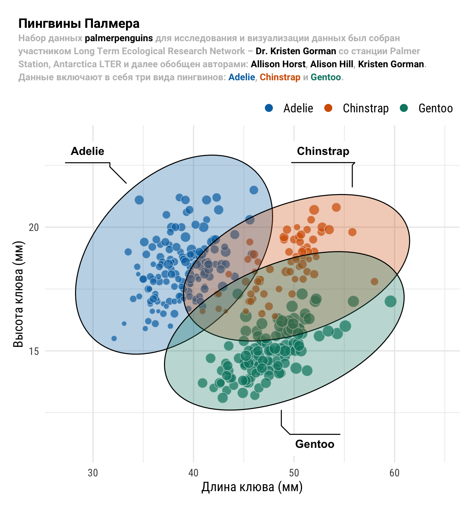
Увеличение части графика
В ggplot2 можно увеличить часть графика, причем осуществить “зуммирование” можно несколькими способами.
Зуммирование в библиотеке ggforce
Приведем пример увеличения части графика с помощью уже упомянутой библиотеки ggforce. Данное преобразование полезно, если требуется детально показать часть графика.
Код: исходный график
# исходный график
gg_for_scale <- penguins |>
na.omit() |>
ggplot(aes(x = bill_length_mm,
y = bill_depth_mm,
fill = species,
size = body_mass_g)) +
geom_point(pch = 21,
color = "white",
alpha = 0.7) +
theme_bw(base_size = 13) +
scale_fill_manual(
values = c(Adelie = "#0072B2",
Chinstrap = "#D55E00",
Gentoo = "#018571"),
name = NULL,
guide = guide_legend(
direction = "horizontal",
override.aes = list(size = 4,
alpha = 1)
)
) +
guides(size = "none") +
theme(
legend.position = "top",
legend.justification = "right",
legend.box.spacing = unit(0.1, "cm"),
legend.text = element_text(size = 13),
plot.margin = ggplot2::margin(t = 0.5,
r = 0.5,
b = 0.5,
l = 0.5, "cm")
) +
labs(x = "Длина клюва",
y = "Высота клюва") +
scale_x_continuous(name = "Длина клюва",
labels = function(x) str_c(x, " мм")) +
scale_y_continuous(name = "Высота клюва",
labels = function(x) str_c(x, " мм"))Зуммирование части графика.
gg_for_scale + facet_zoom(xlim = c(40, 45),
show.area = TRUE)
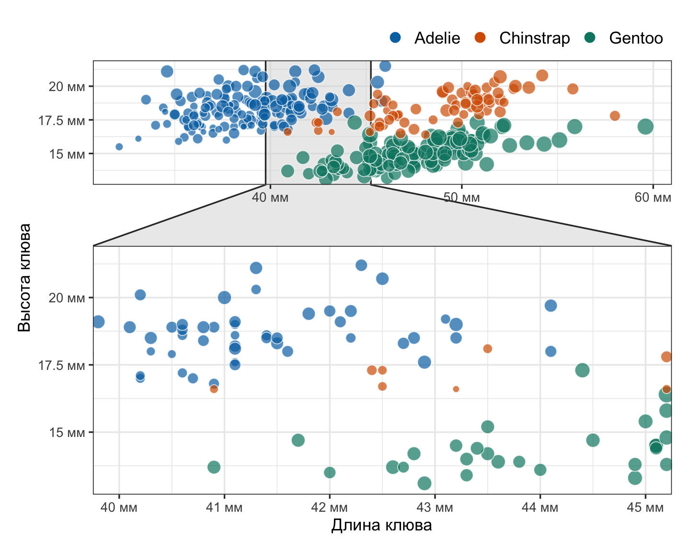
ggforce
Приведем еще один пример зуммирования, здесь выделение происходит по определенной переменной.
gg_for_scale + facet_zoom(xy = species == "Chinstrap",
split = TRUE)
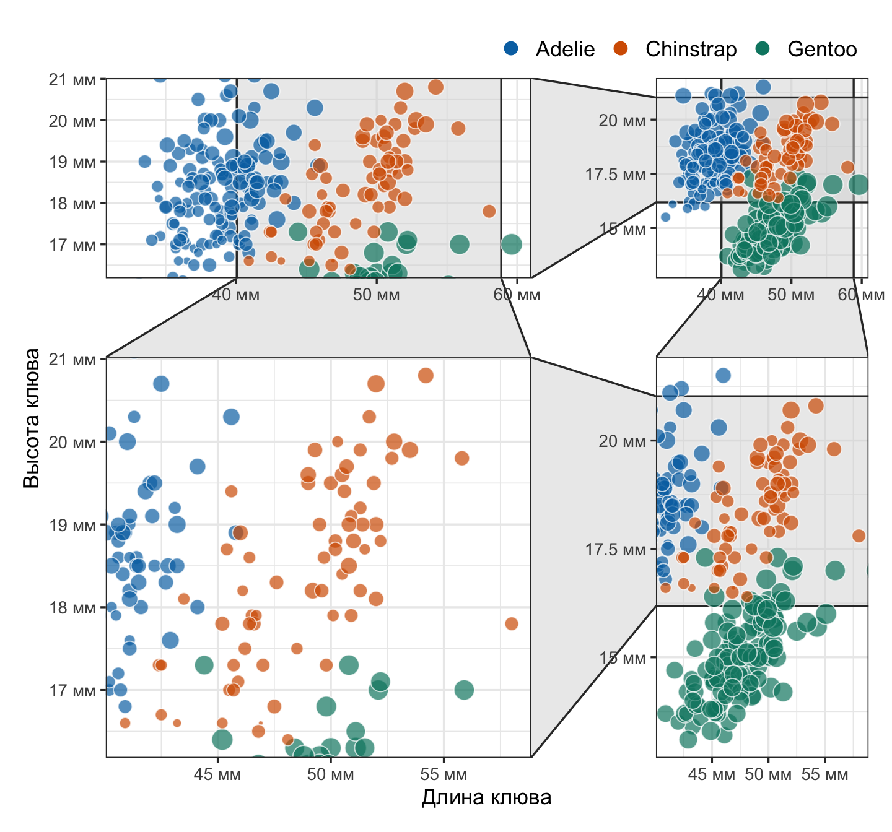
ggforce
Зуммирование в библиотеке ggmagnify
Следующая возможность для зуммирования – использование библиотеки ggmagnify, которую можно загрузить как
remotes::install_github("hughjonesd/ggmagnify")Покажем увеличение объектов на основе географической карты.
Код: исходная карта
nc_Franklin <- nc |> filter(NAME == "Franklin")
gg_map_Franklin <- gg_map +
geom_sf(data = nc_Franklin,
fill = "#BF0A30") +
geom_sf_label(data = nc_Franklin,
aes(label = NAME),
nudge_x = 0.06,
nudge_y = 0.35,
alpha = 0.9) +
labs(x = "", y = "") +
tidyterra::scale_fill_whitebox_c(na.value = "gray80",
palette = "deep")gg_map_Franklin
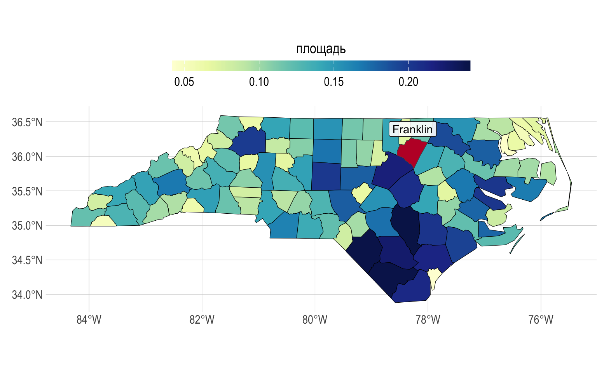
Увеличим необходимый объект.
Код: зуммирование в библиотеке ggmagnify
library(ggmagnify)
gg_map_Franklin +
geom_magnify(aes(from = NAME == "Franklin"),
to = c(-83, -81, 34, 35.8),
shadow = TRUE,
linewidth = 0.6,
colour = "grey20",
shape = "rect",
aspect = "fixed",
alpha = 0.8,
expand = 0) +
tidyterra::scale_fill_whitebox_c(na.value = "gray80",
palette = "deep")
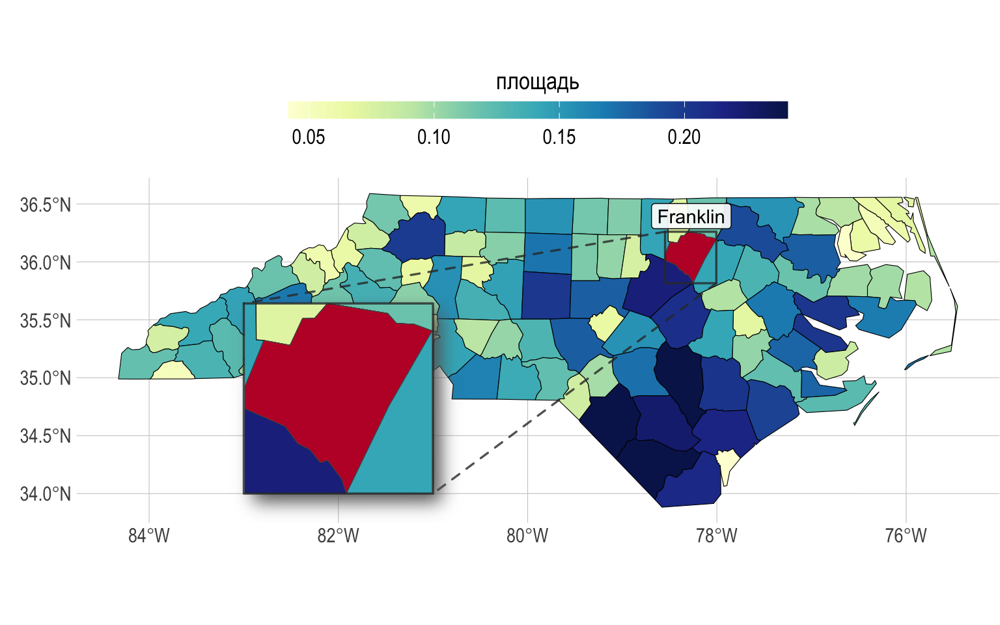
ggmagnify
Зуммирование в библиотеке ggmapinset
Еще одна возможность для зуммирования – библиотека ggmapinset. Заполнение выносимой области происходит с помощью глаголов-команд, которые заканчиваются на *_inset. Здесь можно указать единицы измерения (например, км) для радиуса области, которую необходимо увеличить.
Код: зуммирование в библиотеке ggmapinset
library(ggmapinset)
gg_map +
geom_sf_inset(aes(fill = AREA),
color = "black",
linewidth = 0.2) +
geom_sf_inset(data = nc_Franklin,
fill = "#BF0A30") +
geom_inset_frame() +
geom_sf_label(data = nc_Franklin,
aes(label = NAME),
nudge_x = 0.06,
nudge_y = 0.35,
alpha = 0.9) +
coord_sf_inset(inset =
configure_inset(
centre = sf::st_centroid(sf::st_geometry(nc_Franklin)),
scale = 2.2,
translation = c(-300, -200),
radius = 40,
units = "km"
)) +
labs(x = "", y = "") +
tidyterra::scale_fill_whitebox_c(na.value = "gray80",
palette = "deep")
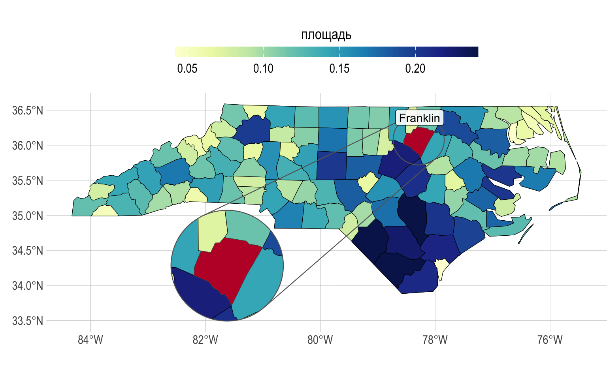
ggmapinset
Добавление эффектов
Один из способов усиления восприятия и добавления различных эффектов в визуализации – работа с фильтрами и шейдерами на слоях ggplot2 в библиотеке ggfx. Например, можно добавить тени к исходному графику.
Код: добавление эффектов к графику
library(ggfx)
gg_map +
with_shadow(
sigma = 3, x_offset = 4, y_offset = 4,
geom_sf(data = nc,
aes(fill = AREA),
color = "black")
) +
tidyterra::scale_fill_whitebox_c(na.value = "gray80",
palette = "deep")
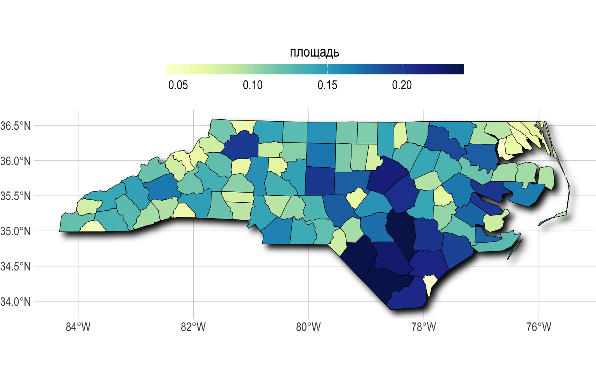
ggfx
Статистические графики
Если в научном исследовании необходимо создать графики с деталями статистических тестов, то можно воспользоваться расширением ggstatsplot. Основная идея ggstatsplot состоит в том, чтобы объединить графическую составляющую со статистическими свойствами. Здесь количество исследуемых показателей довольно внушительное и позволяет качественно построить рабочий процесс. Приведем пример такого графика.
set.seed(2024)
library(ggstatsplot)
ggbetweenstats(
data = penguins |> na.omit(),
x = species,
y = bill_length_mm
)
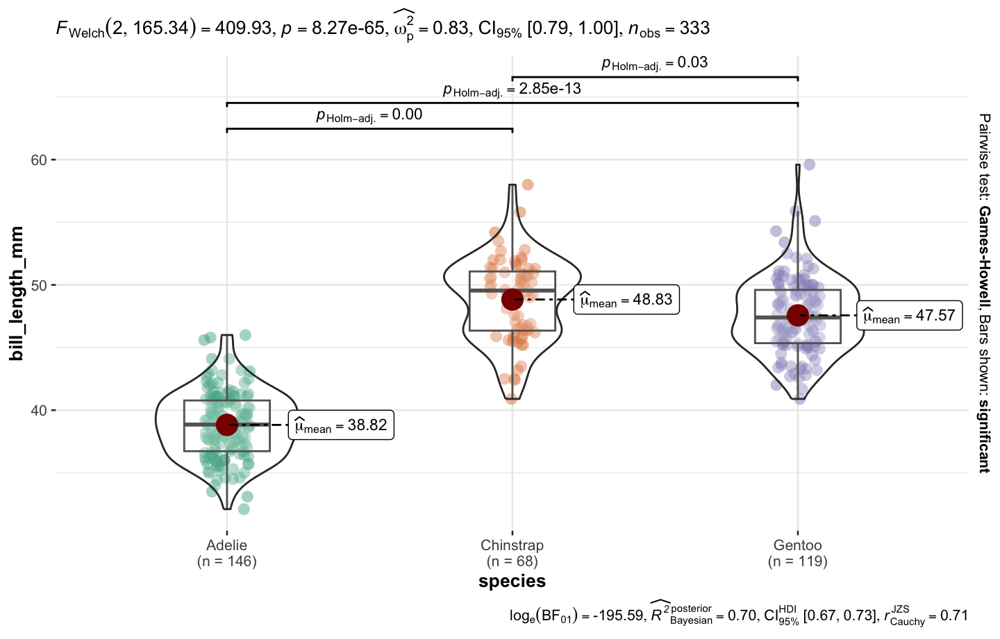
Включение результатов моделирования
С помощью ggplot2 можно публиковать результаты моделирования временных рядов, результаты моделирования машинного обучения, регрессионных моделей в библиотеке broom и т.д. Как правило, для отрисовки определенного графика, для объекта некоторого класса используют команду autoplot(). Пусть требуется классифицировать пингвинов в зависимости от размаха плавника и длины клюва.
# библиотека для реализации метода деревьев решений
library(partykit)
# библиотека для отображения деревьев решений
library(ggparty)# дерево решений
penguin_ctree <- ctree(
# формула, показывающая зависимости
species ~ flipper_length_mm + bill_length_mm,
data = penguins |> na.omit()
)autoplot(penguin_ctree) +
theme_void()
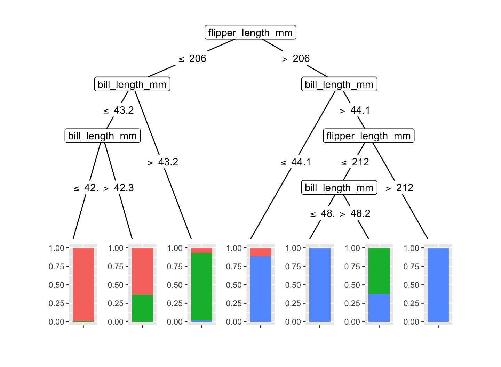
Покажем, как можно на графике визуализировать результаты моделирования простейших деревьев решений в библиотеке parttree. Библиотека работает с деревьями решений, созданными в rpart, partykit, tidymodels и mlr3.
Пусть gg_for_tree – исходный график.
Код: график для визуализации деревьев решений
gg_for_tree <- penguins |>
na.omit() |>
ggplot(aes(x = flipper_length_mm,
y = bill_length_mm,
fill = species)) +
geom_point(pch = 21,
size = 3,
color = "white",
alpha = 0.7) +
scale_x_continuous(name = "\nРазмах плавника",
labels = function(x) str_c(x, " мм")) +
scale_y_continuous(name = "Длина клюва\n",
labels = function(x) str_c(x, " мм")) +
scale_fill_manual(
values = c(Adelie = "#0072B2",
Chinstrap = "#D55E00",
Gentoo = "#018571"),
breaks = c("Adelie", "Chinstrap", "Gentoo"),
labels = c("Adelie", "Chinstrap", "Gentoo"),
name = NULL,
guide = guide_legend(
direction = "horizontal",
override.aes = list(size = 4,
alpha = 1)
)
) +
hrbrthemes::theme_ipsum(grid = "",
base_size = 14) +
theme(
legend.text = element_text(size = 13),
axis.title.x = element_text(size = 12),
axis.title.y = element_text(size = 12),
legend.position = "top",
legend.justification = "right",
legend.box.spacing = unit(0.1, "cm"),
plot.margin = ggplot2::margin(t=0.5,
r=0.5,
b=0.5,
l=0.5, "cm")
)Отобразим результат классификации в модели penguin_ctree, полученной выше, с помощью разделения областей графика.
# визуализирует подгонку деревьев решений
library(parttree)gg_for_tree +
geom_parttree(data = penguin_ctree,
aes(fill = species),
alpha = 0.2)
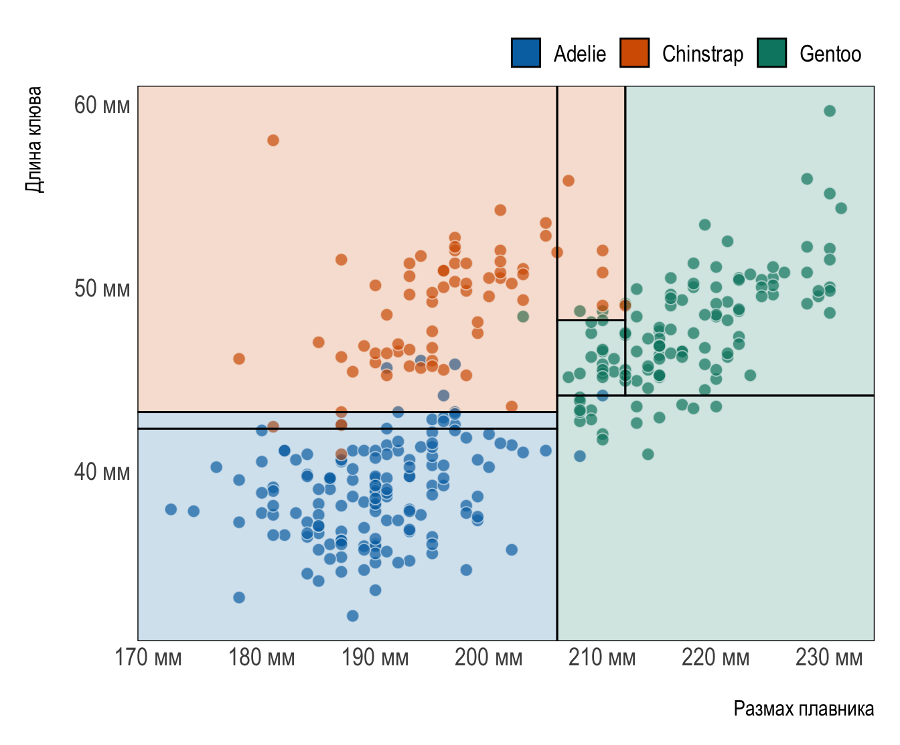
parttree
Заключение
Библиотека ggplot2 является одной из основных библиотек языка программирования R, основанная на Грамматике графики, причем, идеология и культура ggplot2 настолько является универсальной, что переходит и в другие языки, такие как Python и Julia (например, в TidierPlots.jl).
В обзоре не были упомянуты многие библиотеки, которые также достойны внимания и используют в той или иной мере ggplot2, либо являются дополнениями: ggnewscale, GGally, ggrough, gghalves, see, biscale, ggdist, ggdensity, ggblend, ggsurvfit, camcoder, geomtextpath и многие другие.
Дополнительные материалы по ggplot2 можно прочесть в статьях блога Tidyverse, статьях библиотеки, Top 50 ggplot2 Visualizations - The Master List (With Full R Code), ggplot tricks, а также на YouTube.
Session Info
─ Session info ───────────────────────────────────────────────────────────────
setting value
version R version 4.3.2 (2023-10-31)
os macOS Monterey 12.1
system aarch64, darwin20
ui X11
language (EN)
collate ru_RU.UTF-8
ctype ru_RU.UTF-8
tz Asia/Krasnoyarsk
date 2024-03-01
pandoc 2.18 @ /Users/materov/opt/miniconda3/envs/ox/bin/ (via rmarkdown)
quarto 1.4.550
─ Packages ───────────────────────────────────────────────────────────────────
package * version date (UTC) lib source
dplyr * 1.1.4 2023-11-17 [1] CRAN (R 4.3.1)
forcats * 1.0.0 2023-01-29 [1] CRAN (R 4.3.0)
ggdirectlabel * 0.1.0.901 2024-01-06 [1] Github (MattCowgill/ggdirectlabel@757a276)
ggforce * 0.4.2 2024-02-19 [1] CRAN (R 4.3.1)
ggfx * 1.0.1 2022-08-22 [1] CRAN (R 4.3.0)
gghighlight * 0.4.1 2023-12-16 [1] CRAN (R 4.3.1)
ggmagnify * 0.2.0.9000 2024-02-03 [1] Github (hughjonesd/ggmagnify@a5bc00a)
ggmapinset * 0.3.0 2023-04-28 [1] CRAN (R 4.3.0)
ggparty * 1.0.0 2019-07-18 [1] CRAN (R 4.3.0)
ggplot2 * 3.5.0 2024-02-23 [1] CRAN (R 4.3.1)
ggside * 0.3.0.9999 2024-02-27 [1] Github (jtlandis/ggside@7ee2196)
ggstatsplot * 0.12.2 2024-01-14 [1] CRAN (R 4.3.1)
ggtext * 0.1.2 2022-09-16 [1] CRAN (R 4.3.0)
glue * 1.7.0 2024-01-09 [1] CRAN (R 4.3.1)
libcoin * 1.0-10 2023-09-27 [1] CRAN (R 4.3.1)
lubridate * 1.9.3 2023-09-27 [1] CRAN (R 4.3.1)
mvtnorm * 1.2-4 2023-11-27 [1] CRAN (R 4.3.1)
paletteer * 1.6.0 2024-01-21 [1] CRAN (R 4.3.1)
palmerpenguins * 0.1.1 2022-08-15 [1] CRAN (R 4.3.0)
parttree * 0.0.1.9004 2024-02-22 [1] Github (grantmcdermott/parttree@d2b60ac)
partykit * 1.2-20 2023-04-14 [1] CRAN (R 4.3.0)
patchwork * 1.2.0.9000 2024-01-08 [1] Github (thomasp85/patchwork@c6a7c18)
purrr * 1.0.2 2023-08-10 [1] CRAN (R 4.3.0)
readr * 2.1.5 2024-01-10 [1] CRAN (R 4.3.1)
rlang * 1.1.3 2024-01-10 [1] CRAN (R 4.3.1)
scales * 1.3.0 2023-11-28 [1] CRAN (R 4.3.1)
sessioninfo * 1.2.2 2021-12-06 [1] CRAN (R 4.3.0)
sf * 1.0-15 2023-12-18 [1] CRAN (R 4.3.1)
stringr * 1.5.1 2023-11-14 [1] CRAN (R 4.3.1)
tibble * 3.2.1 2023-03-20 [1] CRAN (R 4.3.0)
tidyr * 1.3.1 2024-01-24 [1] CRAN (R 4.3.1)
tidyverse * 2.0.0 2023-02-22 [1] CRAN (R 4.3.0)
unikn * 0.9.0 2023-08-10 [1] CRAN (R 4.3.0)
[1] /Library/Frameworks/R.framework/Versions/4.3-arm64/Resources/library
──────────────────────────────────────────────────────────────────────────────Сноски
Здесь поля указываются в следующем порядке:
t = top, r = right, b = bottom, l = left.↩︎
Ссылка для цитирования
BibTeX
@online{матеров2024,
author = {Матеров, Е.Н.},
title = {Приемы работы и секреты ggplot2},
date = {2024-01-26},
url = {https://www.naukaidannye.netlify.app/blog/posts/2024-01-26-ggplot2},
langid = {ru}
}
На публикацию можно сослаться как
Матеров Е.Н. Приемы работы и секреты ggplot2
[Electronic resource]. 2024. URL: https://www.naukaidannye.netlify.app/blog/posts/2024-01-26-ggplot2.